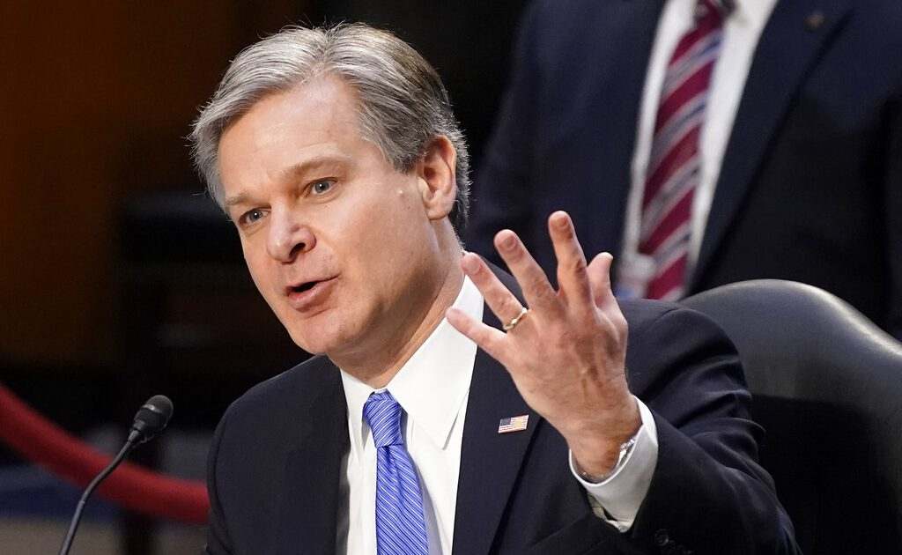

FBI ‘can’t find proof’ of Antifa involvement in Jan.6 protests despite mountains of video evidence
OAN Newsroom
The director of the FBI, Chris Wray, told the Senate he hasn’t seen any proof of Antifa’s involvement in the January 6 protests.However, not only is there ample evidence of Antifa’s role, but the FBI itself has also charged one of its members for inciting violence at the U.S. Capitol that day.
One America’s Pearson Sharp explains.
Posted On: 2021-03-04T00:00:00

Content Date: 2021-03-04
Download Date: 2021-04-16
Document ID: L0C04A3KM